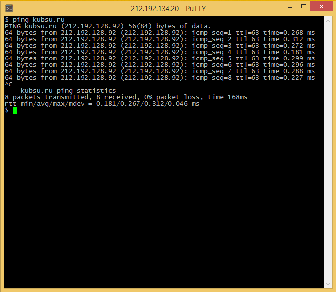
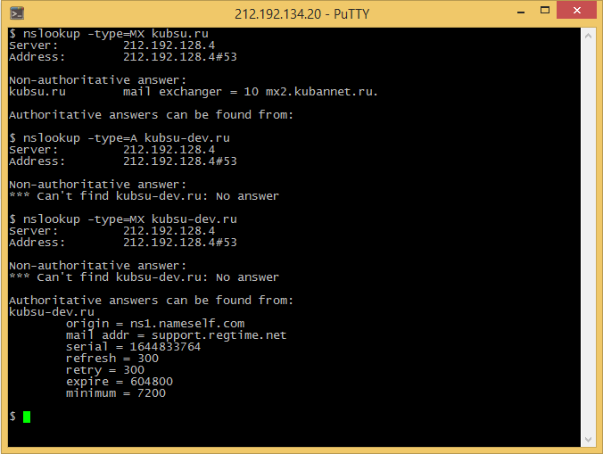
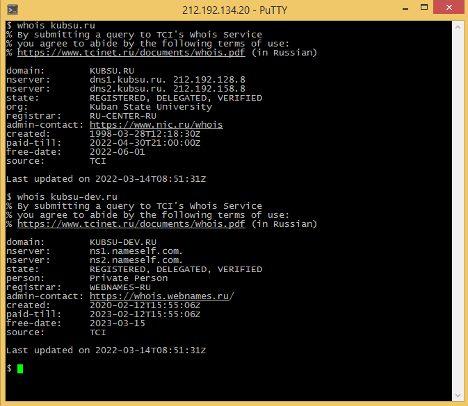

ping — утилита для проверки целостности и качества соединений в сетях на основе TCP/IP, а также обиходное наименование самого запроса.
Утилита отправляет запросы (ICMP Echo-Request) протокола ICMP указанному узлу сети и фиксирует поступающие ответы (ICMP Echo-Reply). Время между отправкой запроса и получением ответа (RTT, от англ. Round Trip Time) позволяет определять двусторонние задержки по маршруту и частоту потери пакетов, то есть косвенно определять загруженность на каналах передачи данных и промежуточных устройствах.
nslookup (англ. name server lookup поиск на сервере имён) — утилита, предоставляющая пользователю интерфейс командной строки для обращения к системе DNS (проще говоря, DNS-клиент). Позволяет задавать различные типы запросов и опрашивать произвольно указываемые сервера. Её аналогом являются утилиты host и dig. Разработана в составе пакета BIND (для UNIX-систем).
А-запись указывает адрес, куда должен ссылаться Ваш домен. Обычно это адрес хостинг-сервера, на котором располагается контент (содержимое) сайта.
MX-запись используется для указания почтового сервера, который использует этот домен. В качестве значения можно указать его адрес в виде домена или IP-адрес. Для домена можно указать несколько МХ-записей, указав для них разные приоритеты: запись с приоритетом 10 будет использоваться при получении почты первой, а если она по каким-то причинам недоступна, то запрос пойдет на запись с приоритетом 20 и так далее.
WHOIS (от англ. who is — «кто это?») — сетевой протокол прикладного уровня, базирующийся на протоколе TCP (порт 43). Основное применение — получение регистрационных данных о владельцах доменных имён, IP-адресов и автономных систем.
Протокол подразумевает архитектуру «клиент-сервер» и используется для доступа к публичным серверам баз данных (БД) регистраторов IP-адресов и регистраторов доменных имён.
